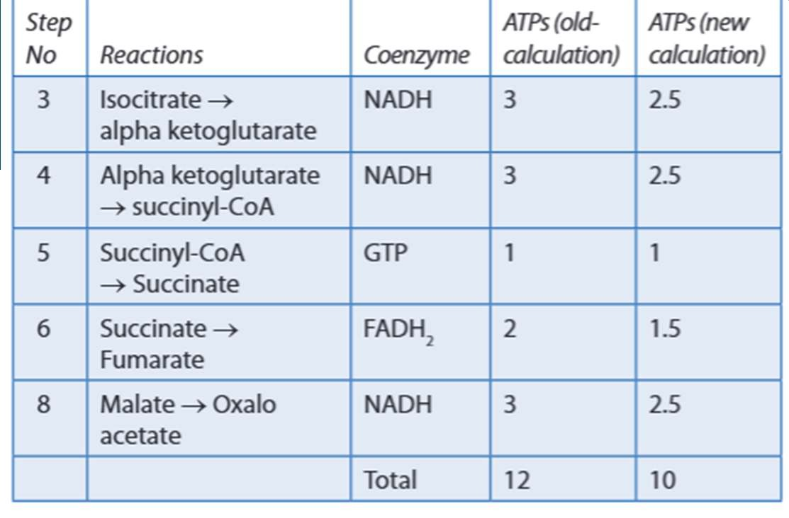

BIO103 · 第 6 章
线粒体与核糖体
The Mitochondrion & Ribosome
虚线下划线为术语；悬停查看中文、英文与释义，完整词典见“术语”。
本章目录
本章分两部分：先拆解线粒体的结构、蛋白导入与四个呼吸阶段，重点落在电子传递链与化学渗透如何把氧化还原能转成 ATP；再转到核糖体的结构、A/P/E 位点、游离与结合核糖体的分选差异以及 rRNA 的催化功能。
本章要点
- 线粒体具双层膜：外膜富含孔蛋白，内膜高度不通透并折叠成嵴，内部为基质。
- 外膜 TOM 复合体识别前体蛋白的信号序列，与内膜 TIM23 协作把蛋白送入基质。
- 细胞呼吸分四阶段：糖酵解、连接反应、三羧酸循环、氧化磷酸化。
- 氧化磷酸化产生约 90% 的细胞 ATP；最终电子受体是 O₂，产物为 H₂O。
- 复合体 I、III、IV 泵质子，复合体 II 不泵；ATP 合酶靠质子回流驱动旋转催化。
- 现代 ATP 计算用 1 NADH = 2.5、1 FADH₂ = 1.5，总产量约 30–32；旧算法为 38。
- 核糖体有 A、P、E 三个位点；大亚基 rRNA 是催化肽键的核酶。
- 游离核糖体合成胞质蛋白，结合核糖体经共翻译转运进入分泌途径。
6.1 线粒体的结构总览
线粒体mitochondrion典型大小为 0.75–3 μm，具双层膜。外膜（outer membrane）光滑，富含孔蛋白porin，允许小分子扩散。内膜（inner membrane）极不通透，明显折叠成架状内陷，即嵴cristae（单数 crista）。内膜折叠之间的区室为膜间隙intermembrane space，内膜内部的腔为线粒体基质mitochondrial matrix。
线粒体被认为经内共生endosymbiosis由自由生活的细菌演化而来。内共生指一种单细胞生物居住在另一细胞内部、形成互利关系。线粒体拥有自己的质粒或环状线粒体 DNA（mtDNA），这是其半自主性的结构证据。孔蛋白是跨膜的 β 桶蛋白，充当可让小分子扩散通过的孔道。
Clean vector cross-section of a mitochondrion: smooth outer membrane with porin channels, inner membrane folded into cristae, intermembrane space between the two membranes, matrix in the lumen containing circular mtDNA and 70S ribosomes, with a callout comparing the porous outer membrane and the impermeable inner membrane. Flat 2D, thin 1.5 px strokes, muted slate blue and warm grey palette, white background, English labels, no cartoon, no gradient, no shadow.
L9–10 p.1–2
6.2 线粒体的数量、外膜与 TOM 复合体
线粒体的数量随细胞类型而变：神经元含相对较少的线粒体；心肌细胞含大量线粒体；成熟红细胞完全没有线粒体。这一组对比常用于判断“代谢活跃程度与线粒体数量”的关系。
外膜按重量约 50% 为磷脂，并含多种酶；蛋白与磷脂的比例约为 1:1。它充当边界膜，调节物质进出线粒体；其上的大孔蛋白通道对小分子代谢物通透，但对大分子与带电大分子不通透。外膜转位酶translocase of the outer membrane（TOM）是多蛋白复合体，识别大分子靶蛋白上的信号序列，打开转运门户把它们导入线粒体。
TOM 复合体的组分包括：核心亚基 Tom40；受体 Tom20、Tom22 与 Tom70；小 TOM 蛋白 Tom5、Tom6、Tom7。线粒体蛋白导入分四步：新合成的前体蛋白被 TOM 受体识别；前体蛋白被引导进入 Tom40 通道；经 TOM 转交给内膜的 TIM23 复合体，由 TIM23 完成跨内膜转运进入基质；进入后蛋白折叠成天然的、有功能的三维构象。临床相关性：特定 TOM 亚基表达降低与神经系统疾病相关，包括阿尔茨海默病与帕金森病。
L9–10 p.3–4
6.3 细胞呼吸的四个阶段与总反应
线粒体把燃料分子中储存的化学能转变为 ATP 高能磷酸键中的化学能。细胞呼吸cellular respiration是有机燃料分子被氧化的过程：有机分子经多个连续反应阶段被降解，释放的化学势能被用于合成 ATP。葡萄糖分解分四个连续阶段：糖酵解、连接反应（丙酮酸氧化）、三羧酸循环、氧化磷酸化。
有氧呼吸的总反应为：C₆H₁₂O₆ + 6O₂ → 6CO₂ + 6H₂O + ATP。各阶段的净产量为：糖酵解净得 2 ATP（另加 2 NADH）；三羧酸循环得 2 ATP/GTP（另加 6 NADH、2 FADH₂）；氧化磷酸化由 NADH 与 FADH₂ 驱动，得约 26–28 ATP；有氧总产量约 30–32 ATP。旧教材常写 36 或 38，属于历史数值。
糖酵解在有氧与无氧条件下都能进行。有氧时丙酮酸被运入线粒体，进入连接反应与三羧酸循环，随后的氧化磷酸化产生 30–32 ATP；无氧时丙酮酸在人体细胞中被还原为乳酸，不再产生线粒体 ATP。
L9–10 p.5–7
6.4 糖酵解与连接反应
糖酵解glycolysis发生在细胞质：葡萄糖被氧化为丙酮酸。每分子葡萄糖净得 2 ATP、2 NADH、2 分子丙酮酸与 2 分子 H₂O。此阶段收获的大部分化学能储存在还原型电子载体 NADH 与 FADH₂ 中。糖酵解与三羧酸循环合计每分子葡萄糖产生 4 ATP，全部来自底物水平磷酸化substrate-level phosphorylation。
连接反应link reaction是糖酵解与三羧酸循环之间的连接步骤，发生在线粒体基质内。丙酮酸经主动运输从细胞质跨过线粒体膜进入基质。随后由丙酮酸脱氢酶复合体pyruvate dehydrogenase complex催化三件事：脱羧——移除一个碳并以 CO₂ 形式释放；脱氢——移除氢（电子 + H⁺），使 NAD⁺ 还原为 NADH + H⁺；与辅酶 A 结合——剩余的二碳单位与 CoA 结合形成乙酰辅酶 Aacetyl-CoA。辅酶 A 充当载体，把乙酰基送入三羧酸循环。
NAD⁺ 是氧化型，作为多种氧化反应的电子受体；NADH 是还原型，携带高能电子与氢离子，把电子交给电子传递链用于氧化磷酸化。
L9–10 p.9–10
6.5 星形胶质细胞–神经元乳酸穿梭
脑内的代谢耦合可用乳酸穿梭说明。步骤为：葡萄糖经脑毛细血管内皮细胞，由葡萄糖转运体 GLUT1 进入星形胶质细胞；在星形胶质细胞内一部分葡萄糖代谢为丙酮酸，再由乳酸脱氢酶 5（LDH5）转为乳酸；乳酸经单羧酸转运体 1（MCT1）跨质膜输出；神经元用 MCT2 摄取细胞外乳酸；神经元内由乳酸脱氢酶同工酶 1（LDH1）把乳酸氧化回丙酮酸；丙酮酸进入有氧线粒体呼吸（三羧酸循环与氧化磷酸化）产生 ATP；神经元也可经 GLUT3 直接摄取葡萄糖进行自身的糖酵解。
这一模型描述的是星形胶质细胞与神经元之间的代谢耦合。图中还标出 SNAT 转运体与谷氨酰胺合成酶/谷氨酰胺酶参与谷氨酸–谷氨酰胺循环；讲义未展开该循环的化学步骤。星形胶质细胞的离子稳态由 Na⁺/K⁺-ATPase 维持。
L9–10 p.11
6.6 三羧酸循环
三羧酸循环Krebs cycle / TCA cycle发生在线粒体基质。每转一圈：产生 2 分子 CO₂；1 分子 FAD 与 3 分子 NAD⁺ 被还原为 FADH₂ 与 NADH + H⁺；经中间产物生成 1 分子 GTP（相当于 ATP）；草酰乙酸（oxaloacetate）再生，准备结合下一个乙酰辅酶 A 重启循环。氧只在电子传递链中被使用，用于重新氧化 NADH 与 FADH₂。
每一分子葡萄糖对应两圈循环，因此总计 6 NADH、2 FADH₂、2 ATP/GTP。NAD⁺ 作为氢负离子（电子 + 质子）受体参与氧化反应，由维生素 B3 合成；严重缺乏维生素 B3 引起糙皮病（pellagra），表现为“4 D”：皮炎（dermatitis）、痴呆（dementia）、腹泻（diarrhoea）与死亡（death）。
L9–10 p.12
6.7 电子传递链
氧化磷酸化oxidative phosphorylation在内膜（嵴）上进行，由两个相连的过程组成：电子传递链（ETC）与化学渗透；它产生约 90% 的细胞 ATP。ETC 由嵌在嵴上的多蛋白复合体与可移动的电子载体组成。电子由还原型载体 NADH 与 FADH₂ 提供；载体在还原与氧化状态之间循环；电子从电子亲和力低的载体依次流向亲和力高的载体，释放自由能。最终电子受体是分子氧 O₂，它与质子、电子结合生成水。
质子泵复合体：复合体 I、III、IV 利用电子传递释放的能量把 H⁺ 从基质泵入膜间隙；复合体 II 不泵质子。辅酶 Q（CoQ）与细胞色素 c 是可溶的移动电子载体，在复合体之间穿梭。电子流路径有两条：NADH → 复合体 I → CoQ → 复合体 III → 细胞色素 c → 复合体 IV → O₂；FADH₂ 从复合体 II 进入 → CoQ → 复合体 III → 细胞色素 c → 复合体 IV → O₂。

Clean vector diagram of the inner mitochondrial membrane: complexes I, II, III and IV embedded in the crista membrane, coenzyme Q and cytochrome c as mobile carriers, NADH entering at complex I and FADH2 at complex II, protons pumped from matrix to intermembrane space at complexes I, III and IV, oxygen reduced to water at complex IV, and ATP synthase with protons flowing back into the matrix driving ADP to ATP. Flat 2D, thin strokes, muted slate blue and warm grey, white background, English labels, no cartoon, no gradient, no shadow.
L9–10 p.13–14
6.8 化学渗透与 ATP 产量计算
内膜高度富含蛋白（约占重量 75%），且不含胆固醇。ATP 合成有两条机制：底物水平磷酸化发生在糖酵解（细胞质）与三羧酸循环（基质）中，只贡献少量 ATP；氧化磷酸化（化学渗透）则贡献约 90%。化学渗透chemiosmosis指质子顺其电化学梯度、经 ATP 合酶回流进基质；质子流驱动 ATP 合酶旋转，催化 ADP 磷酸化为 ATP。关键点是：氧化磷酸化把电子传递（NADH/FADH₂ 的氧化）与 ATP 合成（ADP 的磷酸化）连接起来。
ATP 产量有两套算法。传统旧算法：1 NADH = 3 ATP、1 FADH₂ = 2 ATP（胞质 NADH 用苹果酸–天冬氨酸穿梭），底物水平 4 ATP + 10 NADH × 3 + 2 FADH₂ × 2 = 38 ATP。现代修正算法：1 NADH = 2.5 ATP、1 FADH₂ = 1.5 ATP，底物水平 4 ATP + 10 × 2.5 + 2 × 1.5 = 32 ATP。讲义明确说明旧值是历史教科书数值，不是真实生理值。
按穿梭系统不同，理论总产量分两种情形。甘油-3-磷酸穿梭（如肌细胞）：糖酵解 2 + 2 NADH × 1.5 = 5 ATP；丙酮酸氧化 2 NADH × 2.5 = 5 ATP；三羧酸循环 2 ATP；氧化磷酸化 6 NADH × 2.5 + 2 FADH₂ × 1.5 = 18 ATP；合计 30 ATP。苹果酸–天冬氨酸穿梭（如肝细胞）：糖酵解 2 + 2 × 2.5 = 7 ATP；其余相同；合计 32 ATP。
L9–10 p.15–17
6.9 线粒体基质、mtDNA 与功能障碍
基质含环状 DNA（mtDNA）、蛋白质合成所需组分与 70S 核糖体。线粒体约含 1,500 种蛋白；人类线粒体基因组编码 2 种 rRNA、22 种 tRNA 与 13 条多肽（均为氧化磷酸化的必需组分）。只有约 1% 的线粒体蛋白在线粒体内制造，其余 99% 在细胞质 80S 核糖体上翻译为前体蛋白后导入。13 条 mtDNA 编码多肽分属氧化磷酸化的四个蛋白复合体：复合体 I（NADH 脱氢酶）7 个亚基；复合体 III（细胞色素 bc₁ 复合体）1 个细胞色素亚基；复合体 IV（细胞色素 c 氧化酶）亚基 I、II、III；复合体 V（ATP 合酶）亚基 6 与 8。
mtDNA 还携带线粒体蛋白合成所需的基因：2 种 rRNA（12S 与 16S）构成线粒体核糖体的结构骨架；22 种 tRNA 用于把线粒体 mRNA 翻译为多肽。
线粒体功能障碍的后果有两类：ATP 产量下降（细胞呼吸受损、信号改变、凋亡、钙稳态受损）；活性氧（ROS）水平升高，损伤脂质、蛋白与 DNA，并与炎症及神经退行性疾病相关。其诱因包括基因突变、衰老、环境因素、营养缺乏与代谢障碍；多个风险因素会互相放大，形成 ROS 升高与线粒体损伤相互加剧的恶性循环。
讲义还用阿尔茨海默病说明脑内葡萄糖代谢与线粒体的关系。PET 显示轻度认知障碍与阿尔茨海默病患者的脑葡萄糖代谢下降，尤以颞叶与顶叶明显。其概念模型分三相：第一相为脑低代谢，涉及葡萄糖转运（GLUT）受损、丙酮酸脱氢酶复合体（PDHC）活性受损和/或 α-酮戊二酸脱氢酶复合体（KDHC）活性受损；第二相为低代谢促成的神经病理，包括微血管改变（血脑屏障功能改变）与 tau 过度磷酸化；第三相为临床可观察的症状期。讲义提出的两条干预思路都指向持续改善脑内燃料供应：改善脑葡萄糖代谢，或用酮体替代葡萄糖作为脑的替代燃料。
L9–10 p.18–20, p.28–33
6.10 核糖体的结构与 A/P/E 位点
核糖体ribosome是蛋白质合成（翻译）的场所。真核细胞的核糖体分布于多处：游离于细胞质、结合在粗面内质网上，以及线粒体与叶绿体内部。核糖体催化肽键形成，把氨基酸按 mRNA 上密码子的顺序连接成多肽链。它由小亚基与大亚基两部分组成；真核 80S 核糖体的大亚基为 60S，mRNA 是携带基因编码信息的单链 RNA，核糖体在合成蛋白时读取其序列。
核糖体有三个 tRNA 结合位点：A 位（aminoacyl site）接受携带新氨基酸的氨酰-tRNA；P 位（peptidyl site）持有与延伸中的多肽链相连的 tRNA；E 位（exit site）在氨基酸转移后释放不带氨基酸的 tRNA。
方向性可以这样记：A → P → E，即进入、成肽、退出。肽键在 P 位 tRNA 上的多肽与 A 位 tRNA 上的氨基酸之间形成，随后核糖体沿 mRNA 移动一个密码子，空载 tRNA 从 E 位离开。

Clean vector diagram of a ribosome on an mRNA strand: large and small subunits in cross-section, mRNA threaded between them with codons marked, three tRNA binding sites labelled A, P and E, an aminoacyl-tRNA entering the A site, a peptidyl-tRNA in the P site carrying the growing polypeptide chain, and an uncharged tRNA leaving from the E site. Flat 2D, thin strokes, muted slate blue and warm grey, white background, English labels, no cartoon, no gradient, no shadow.
L9–10 p.21
6.11 游离与结合核糖体、蛋白质分选
游离核糖体free ribosome漂浮在细胞质基质中，合成胞质蛋白与非分泌蛋白，这些蛋白留在细胞内，例如细胞骨架蛋白 actin 与核酶 DNA polymerase。结合核糖体bound ribosome附着在粗面内质网的细胞质面，合成整合膜蛋白、靶向其他细胞器的蛋白，以及几乎所有分泌到细胞外的蛋白，例如肽类激素、消化酶、细胞因子与抗体。
非分泌途径：所有由核 DNA 编码的 mRNA 都在细胞质核糖体上翻译。没有 ER 信号序列的多肽在游离核糖体上完成合成，随后直接释放到细胞质中作为胞质蛋白发挥功能；带细胞器靶向序列的蛋白先完整合成并释放到细胞质，再被翻译后导入线粒体、叶绿体、过氧化物酶体或细胞核。线粒体蛋白需跨过外膜与内膜两层才能到达基质；叶绿体蛋白需穿过多层膜进入基质腔。
分泌途径：正在合成分泌型多肽的核糖体被 ER 信号序列招募到粗面内质网，这一过程是共翻译的（co-translational）——翻译在游离核糖体上开始，ER 信号序列一出现，核糖体–mRNA 复合体就附着到粗面内质网，翻译继续并把延伸中的多肽插入 ER。翻译结束后蛋白被包装进转运囊泡送往高尔基体进一步加工与分选，随后被分送到细胞外（包括 ECM 组分）、质膜、溶酶体或作为整合膜蛋白插入膜中。
L9–10 p.22–24
6.12 rRNA 的功能与核糖体异质性
核糖体按 mRNA 的遗传指令建造蛋白质：读取密码子序列，招募携带相应氨基酸的带电 tRNA，并按 mRNA 规定的精确顺序装配氨基酸。rRNAribosomal RNA在核糖体中有多项核心作用：结合 mRNA 与 tRNA，并把这两种 RNA 精确摆位，以便在翻译过程中把氨基酸逐个加到延伸中的多肽链上。
大亚基的 rRNA 充当核酶ribozyme，具有肽基转移酶（peptidyl transferase）活性，催化相邻氨基酸之间肽键的形成。小亚基含一段负责在翻译起始时结合 mRNA 的 rRNA，这一相互作用确保翻译从 mRNA 上的正确位置开始；失去该结合功能会阻止蛋白合成的正常起始。
哺乳动物的核糖体具有异质性：rRNA 含组织特异性序列；rRNA 存在多种修饰，包括 N6-甲基腺苷（m6A）；多种因子与核糖体结合，改变其翻译能力；核糖体蛋白（RP）的丰度可影响核糖体化学计量，某些 RP 在神经元中可绕过经典生物合成途径被掺入核糖体；RP 还可带多种翻译后修饰；9 种经典 RP 具有旁系同源蛋白，其中一些是组织特异的。讲义以“核糖体相关疾病”概括这一层调控的病理意义。
L9–10 p.25–26